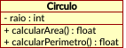
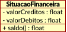

1. Qual a diferença entre objetos e classes? Exemplifique.
Classe é um modelo com definições de características e métodos. O objeto é a materialização desse modelo.
Um exemplo de classe seria uma pessoa que possui nome, endereço, data de nascimento. Já um objeto da classe pessoa
teria um nome como João, endereço como rua dos cocais 966, nascido em 27 de janeiro de 1985.
2. De forma breve, conceitue atributos e métodos. Pesquise e exemplifique um
exemplo de objeto que possua atributos e métodos (notação livre).
Atributos são as características de um objeto. Métodos são as ações que um objeto pode realizar.
Um objeto do tipo Animal pode ter os seguintes atributos: peso, altura, cor, táxon.
Como métodos esse Animal poderá comer(), caminhar(), reproduzir()
3. A abstração visa focar no que é importante para um sistema. Você concorda que
um atributo de uma pessoa pode ser importante ou não dependendo do contexto
do sistema. Enumere na tabela abaixo contextos/sistemas distintos em que os
atributos abaixo seriam relevantes:
Atributo Sistema em que é importante
______________________________________________________________________________
Peso | clínica de emagrecimento
____________________________________|_________________________________________
Tipo de CNH | companhia de logística
____________________________________|_________________________________________
Tipo Sanguíneo | hospital
____________________________________|_________________________________________
Habilidade destra | sistema forense
____________________________________|_________________________________________
Percentual de gordura | consultório de nutrição
____________________________________|_________________________________________
Saldo em conta | sistema bancário
____________________________________|_________________________________________
Etnia | instituto de estatística
____________________________________|_________________________________________
4. Considerando os objetos Pessoa e Conta:
a. Seria interessante em um sistema bancário um objeto "conta" possuir uma
"pessoa" como um atributo interno representando o titular da conta?
Não seria o ideal porque pode acontecer de uma conta ser conjunta e possuir mais
de uma pessoa como titular.
b. Olhando no sentido inverso, seria interessante uma pessoa possuir mais de
uma conta como atributo? Que elemento da programação estruturada melhor
representaria o conjunto de contas de uma pessoa?
A pessoa precisa ter a possibilidade de ter mais de um conta, isso porque
existem contas de vários tipos que podem pertencer ao mesmo titular, como
por exemplo, conta salário, corrente, poupança.
Para armazenar as diversas contas do mesmo titular, podemos usar um array.
5. Identifique pelo menos 5 objetos de um sistema de controle acadêmico. Ex: aluno.
Boletim, diário de classe, histórico do aluno, professor, grade curricular
6. Imagine um jogo qualquer. Identifique o máximo de objetos possíveis e eventuais
características (atributos) e comportamentos (métodos) que os mesmos poderiam
ter.
Um jogo de naves espaciais
Objetos:
- Nave inimiga
* arma principal
------------------
# atirar()
# avançar()
- Nave principal
* arma principal
* arma secundária
* canhão
------------------
# atirar()
# bombardear()
# ativarEscudo()
# avançar()
# moverDireita()
# moverEsquerda()
# retroceder()
7. Considerando o exemplo da classe Retangulo dos slides, implemente um método
adicional chamado que calcule o perímetro do retângulo e altere a classe
TestaRetangulo para exibir o cálculo do perímetro.
class Retangulo {
l1: number = 0;
l2: number = 0;
calcularArea(): number {
return this.l1 * this.l2;
}
calcularPerimetro(): number {
return this.calcularArea() * 2;
}
}
let retangulo : Retangulo;
retangulo = new Retangulo();
retangulo.l1 = 10;
retangulo.l2 = 20;
console.log(retangulo.calcularArea()); // imprime o valor 200
console.log(retangulo.calcularPerimetro()); // imprime o valor 400
8. Crie uma classe Circulo que possua um atributo raio. Crie dois métodos que
calculam a área e o perímetro. Instancie um objeto dessa classe, atribua um valor
ao raio e exiba a área e o perímetro chamando os dois métodos definidos.
class Circulo {
raio : number = 0;
calcularArea(): number {
return this.raio**2 * Math.PI
}
calcularPerimetro(): number {
return 2 * this.raio * Math.PI;
}
}
let circulo : Circulo;
circulo = new Circulo();
circulo.raio = 10;
console.log(circulo.calcularArea()); // imprime 314.1592653589793
console.log(circulo.calcularPerimetro()); // imprime 62.83185307179586
9. Crie uma classe chamada SituacaoFinanceira com os atributos valorCreditos e
valorDebitos. Crie um método chamado saldo() que retorna/calcula a diferença
entre crédito e débito. Instancie uma classe SituacaoFinanceira, inicialize os dois
atributos e exiba o resultado do método saldo().
class SituacaoFinanceira {
valorCreditos : number = 0;
valorDebitos : number = 0;
saldo(): number {
return this.valorCreditos - this.valorDebitos;
}
}
let financas : SituacaoFinanceira;
financas = new SituacaoFinanceira();
financas.valorCreditos = 100;
financas.valorDebitos = 97;
console.log(financas.saldo()); // imprime 3
10. Represente as classes das questões 8 e 9 no formato UML.
 